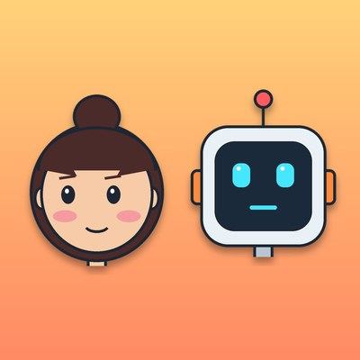

Nina & Bit Tech
Curiosità tech in meno di un minuto
Nina chiede, Bit risponde: storia, trucchi e curiosità di smartphone, internet e AI.
YouTubeInstagramTikTok 📚Tutte le curiosità (articoli e video)
Curiosità tech in meno di un minuto
Nina chiede, Bit risponde: storia, trucchi e curiosità di smartphone, internet e AI.
YouTubeInstagramTikTok 📚Tutte le curiosità (articoli e video)